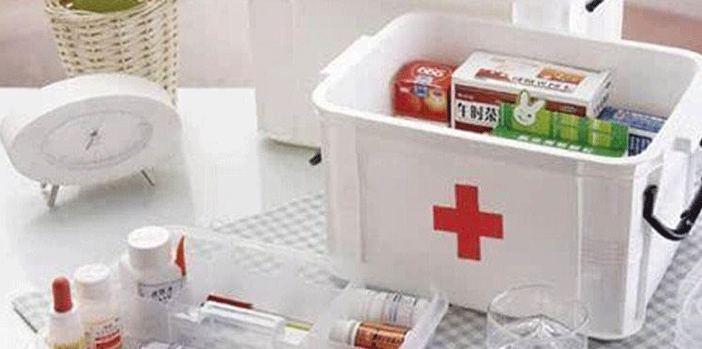

常用药品专业知识手册第四章
第四章
心血管系统疾病
一、高血压
[病因]
1、原发性高血压病因尚未明了。目前国内外公认为是一种与遗传及环境因素有关的慢性病。
2、发病危险因素有：家庭遗传、吃盐过多、体重赶重、过度肥胖、注意力高度集中、过度紧张有脑力劳动、剧烈噪音和强光的工作环境、寒冷气候、吸烟酗酒等。该病发病有随年龄增高的趋向。
[临床表现]
1、一般表现：可有头痛、头晕、眩晕、气急、疲劳、心悸、耳鸣等，但不一定与血压水平相关；
2、血压升高：收缩压≥140mmHg和（或）舒张压≥90mmHg。（必须在非药物状态下二次或二次以上非同日多次重复测血压高于正常）。类别收缩压（mmHg）舒张压（mmHg）理想血压<120<80正常血压<130<85正常高值130-13985-891级高血压（轻度）140-15990-992级高血压（中度）140-159100-1093级高血压（重度）≥180≥110当收缩压和舒张压分属于不同分级时，以较高的级别作为标准。
[治疗用药]
1、利尿剂：氢氯塞嗪（双氢克尿噻）、螺内酯（安体舒通）、速尿（呋塞米）、吲达帕胺寿比山）等；
2、血管紧张素转换酶抑制剂（ACEI）：卡托普利（开博通）、马来酸依那普利、盐酸苯那普利（洛汀新）、培哚普利（雅施达）等；
3、β受体阻滞剂：普奈洛尔（心得安）、美托洛尔（倍他乐克）等；
4、钙通道阻滞剂：尼群地平、硝苯地平（心痛定、拜新同控释片、拜心通）、地尔硫卓（恬尔心、合心爽）、马来酸氨氯地平（络活喜）、尼莫地平片、非洛地平（波依定）、拉西地平（三精司**）等；
5、血管紧张素II受体阻滞剂：洛沙坦、氯沙坦（科素亚）、厄贝沙坦（伊泰青）等；
6、α1受体阻滞剂：盐酸特拉唑嗪（高特灵）、哌唑嗪等；
7、中成药：复方罗布麻片、牛黄降压片、天麻素片、复方丹参滴丸、复方丹参片、复方芦丁片、珍菊降压片、稳压胶囊等；
8、其他：复方利血平片、北京降压0号，复方降压0号，复方降压片、可乐定贴片等；有效治疗的标准是使血压降至正常范围，即降到140/90mmHg以下，可单一用药也可联合用药，尽可能用每日1片的长效制剂以减少血压波动（具体根据顾客情况推荐）；高血压患者需长期服药，禁忌突然停药。
二、心绞痛
[病因]
1、冠状动脉粥样硬化性狭窄伴这冠状动脉内血栓形成和/或冠状动脉痉挛、主动脉瓣狭窄或关闭不全、肥厚性心肌病、梅毒性主动脉炎、二尖瓣脱垂综合征等。
2、诱因：劳累、体力活动、情绪激动（如愤怒、焦急、过度兴奋等）、饱食、吸烟、受寒、阴雨天气、急性循环衰竭、心动过速、休克等。
[临床表现]
（发作性胸痛或胸部不适）
1、部位：主要在胸骨体上段或中段之后可波及心前区，常放射至左肩、左臂内侧达无名指和小指，或至颈、咽或下颌部。
2、性质：胸痛常为压迫、发闷或紧缩性，也可有烧灼感，但不尖锐，不像针刺或刀扎样痛，偶伴濒死的恐惧感觉。发作时患者往往不自觉地停止原来的活动，直至症状缓解。
3、持续时间：疼痛出现后常逐步加重，然后在3到5分钟内逐渐消失，一般在停止原来诱发症状的活动后即缓解。舌下含服硝酸甘油也能在几分钟内使之缓解。可数天或数星期发作一次，亦可一日内多次发作。
[治疗用药]
1、发作时的治疗：
①休息：吸氧；可推荐制氧机，制氧器，氧气袋；
②硝酸酯制剂：硝酸甘油、硝酸异山梨酯（消心痛）等；
③中成药：麝香保心丸、活心丸、速效救心丸等；
2、缓解期的治疗
①硝酸酯制剂：长效硝酸甘油、硝酸异山利酯（消心痛）、单硝酸异山梨酯（鲁南欣康）等；
②β受体阻滞剂：普奈洛尔（心得安）、美托洛尔（倍他乐克）等；
③钙通道阻滞剂：硝苯地平、氨氯地平、维拉帕米（异博定）、地尔硫卓等；
④中成药：复方丹参滴丸、复方丹参滴片、心血康、舒血宁、养心丹、地奥心血康等。
附：抗血栓药简介
基本概念
1、血栓形成：指在活体的心脏或血管腔内，血液发生凝固或血中的某些有形成分互相粘集，形成固体质块的过程。
2、血栓：指在这个过程中所形成的固体质块。血栓对机体的影响：
1、阻塞血管：心绞痛、心梗、脑血栓等；
2、栓塞：心梗、脑梗、肺梗塞等。
抗血栓药：基本用于血栓栓塞性疾病（如：脑血栓、脑梗塞、脑出血恢复期等）；禁用于出血性疾病的急性期等。
[阿司匹林]
（指肠溶阿司匹林，规格30mg/片，25mg/片等）
适应症：心绞痛；急性心肌梗死；短暂脑缺血发作；脑梗塞；高血压病，有冠心病和脑血管病病史者；早期糖尿病性视网膜病变；慢性心房颤动；冠脉搭桥术后；人工心脏瓣膜置换术后。
禁忌症：有水货性溃疡病史者；有上消化道出血史者；有上消化道穿孔史者；各种出血
性疾病；近期脑出血史者；肝、肾功能不全；妊娠期妇女；支气管哮喘；手术病人术前一周内。且不宜与其他非甾体抗炎药、糖皮质激素同服，用药期间不宜饮酒。
[潘生丁片]（又称双嘧达莫）
适应症：用于预防血栓栓塞性疾病。主要用于急、慢性冠脉功能不全，心肌功能不全，慢性心绞痛，心肌梗塞的预防及恢复期治疗，亦可用于心脏外科手术以防止血栓形成。禁忌症：过敏患者禁用，心梗的低血压病人禁用。出血、休克、低血压病人禁用。
[脑益嗪]（又称桂利嗪）
适应症：用于脑血栓形成、脑栓塞、脑动脉硬化、脑出血恢复期、脑外伤后遗症、内耳眩晕症、末梢循环不良引起的疾患等。禁忌症：颅内出血未止、脑梗塞急性期禁用；孕妇禁用。
[银杏叶片]其主要成分为黄酮甙
适应症：用于动脉硬化及高血压病所致的冠状动脉供血不全，心绞痛、心肌梗塞、脑血栓、脑梗塞、脑血管痉挛等。禁忌症：心力衰竭者、孕妇禁用。
[灯盏花素]主要成分为灯盏乙素如灯盏花素片等。
适应症：活血化瘀，通络止痛。用于冠心病，心绞痛，脑梗塞，脑供血不足，闭塞性血管疾病所致瘫痪，脑出血所致后遗症如嗜睡、昏迷、失语、头痛、大小便失禁、流涎、高粘血症、脑血栓等。禁忌症：脑出血急性期或有出血倾向的患者禁用。
[血塞通]其主要成分为三七总甙
适应症：治疗脑血管疾病（脑血栓形成，脑栓塞、脑梗塞、短暂性脑缺血、脑出血后遗症瘫痪，面肌抽搐等）。心血管内科治疗冠心病、心绞痛、心肌梗塞。眼科：治疗视网膜血管阻塞，眼前房出血、青光眼等。禁忌症：孕妇忌用。
[其他]
华佗再造丸、血络通胶囊、活血通脉片、复方血栓通胶囊、消栓再造丸、人生再造丸等。